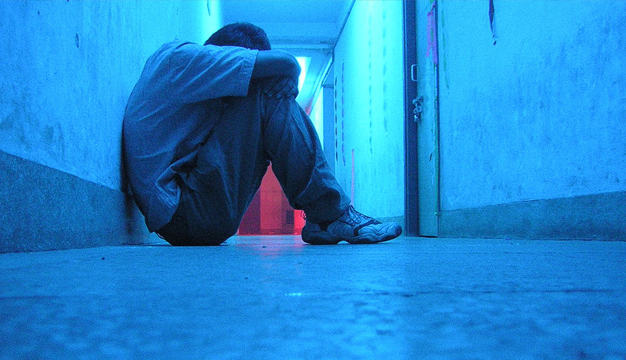

Le documentaire traite de la création, de l’évolution et des dérives d’Internet à travers une série d’événements chronologiques. Comme une ligne du temps retraçant les origines d’Internet et ce qu’il en est aujourd’hui.
L'histoire d'internet.
Je trouve personnellement que le documentaire relate correctement l’histoire d’Internet, mais ne rentre pas assez dans les détails. On sent qu’une recherche a été faite, mais pour la plupart des aspects, j’ai l’impression qu’il s’agit d’une recherche de surface. Par exemple, au début du documentaire, on parle du fait que dans les années 70 deux chercheurs ont inventé un protocole qui était nécessaire pour uniformiser les différents moyens de communication qui commençaient à voir le jour. Mais à aucun moment le documentaire ne mentionne le nom du protocole, ni son fonctionnement. Une fois mentionné, il passe directement à la suite et je trouve que le documentaire aurait à gagner à rentrer plus dans les détails d’autant qu’il s’agit d’une série de plusieurs vidéos. Le premier volet aurait donc dû, selon moi, se consacrer à la création d’Internet dans son ensemble en se concentrant sur ses divers aspects.
En outre, pour le protocole en question, au lieu de simplement mentionner « qui » l’a fait, dans quel contexte et pourquoi, ils auraient pu expliquer brièvement qu’il s’agissait du protocole TCP/IP. Celui-ci est un moyen permettant l’encapsulation des données segmentées avec la commutation de paquet dans diverses couches, afin de réaliser une sorte d’étiquette pour chaque paquet, qui donnera ainsi des indications telles que l’envoyeur, le destinataire, comment les paquets doivent être remontés avec les autres pour reformer l’information initiale. Bref, une petite explication simple qui ne rentre pas plus dans les détails, mais suffisamment pour qu’on se souvienne de l’utilité de ce protocole et de la manière dont il remplissait son rôle. Ce qui est ironique, c’est que toutes les parties présentées ne subissent pas le même traitement, car la commutation de paquet, elle, est bien représentée et expliquée.
La culture narcissique du web.
 Tout l’aspect technique d’Internet est très vite survolé pour passer à l’Internet de nos jours, où le documentaire parle de "l’Ice-bucket Challenge", qui aurait propulsé la culture narcissique du web. Déjà, l’Ice-bucket Challenge a débuté fin juin 2014. Il faut savoir que la plupart des influenceurs de YouTube, américains comme francophones, ont démarré leur carrière dans les années 2010 et, si quelque chose avait bien propulsé la culture narcissique du web, il s’agirait plutôt des Youtubeurs. En effet, les influenceurs d’aujourd’hui ont beaucoup plus amorcé ce type de culture avec, par exemple, le fantasme du rêve américain. Beaucoup d’influenceurs se sont vite retrouvés très riches, très jeunes, avec une sorte de starification autour de leur personne alors qu’à la base, ils n’étaient que des adolescents dans leur chambre, filmant leurs vidéos. À l’instar de Bill Gates, créant les bases de ce que sera Microsoft des années plus tard, en commençant dans son garage.
Tout l’aspect technique d’Internet est très vite survolé pour passer à l’Internet de nos jours, où le documentaire parle de "l’Ice-bucket Challenge", qui aurait propulsé la culture narcissique du web. Déjà, l’Ice-bucket Challenge a débuté fin juin 2014. Il faut savoir que la plupart des influenceurs de YouTube, américains comme francophones, ont démarré leur carrière dans les années 2010 et, si quelque chose avait bien propulsé la culture narcissique du web, il s’agirait plutôt des Youtubeurs. En effet, les influenceurs d’aujourd’hui ont beaucoup plus amorcé ce type de culture avec, par exemple, le fantasme du rêve américain. Beaucoup d’influenceurs se sont vite retrouvés très riches, très jeunes, avec une sorte de starification autour de leur personne alors qu’à la base, ils n’étaient que des adolescents dans leur chambre, filmant leurs vidéos. À l’instar de Bill Gates, créant les bases de ce que sera Microsoft des années plus tard, en commençant dans son garage.
Mais accuser ainsi Internet et ses influenceurs serait dénigrer l’impact positif qu’ils ont également eu sur la société. En effet, nombreuses sont les campagnes de dons à des fins de charité (Z-Event, streams caritatifs d’influenceurs comme Markiplier ou Pewdiepie).
En écartant les vidéastes qui ne visent que la mise en avant de leur personnalité et sans vouloir minimiser l’importance du divertissement, il n’existe pas que ces concepts ; il existe une pléthore de vidéos de tutoriels, de vulgarisation scientifique / politique / historique / philosophique. Réduire l’impact positif et négatif d’Internet à l’Ice-bucket challenge est extrêmement réducteur.
Le coupable: Facebook?
Concernant Facebook, je pense qu’il s’agit d’une plateforme qui a son intérêt pour beaucoup de gens, mais il y a plusieurs aspects que je n’apprécie pas, notamment le côté pervers, que les utilisateurs de la plateforme peuvent renvoyer. Un biais cognitif possible, est d’omettre le fait que la vie des gens présents sur Facebook n’est pas leur vie réelle ; ils ont aussi leurs hauts et leurs bas, leur problème dans la vie. Cependant, sur ce réseau social, il n’y a que le positif qui est mis en avant par les utilisateurs. Résultat, il y a un risque que cela renvoie aux clients de Facebook une image imparfaite de leur propre vie sans que ces derniers ne remettent en question ce qu'ils trouvent sur ce réseau.
Pour ce qui est du fait que la plateforme a permis une diffusion en live de l’assassinat d’une personne, je pense qu’il s’agit avant tout d’un accident. Cela n’est pas une généralité et il ne faut pas le prendre en tant que tel. S’offusquer qu’un tel événement ait pu se produire en live et s’énerver sur Internet parce qu’il permet ce genre d’incident, c’est en réalité déplacer le problème ailleurs. Le souci de l’assassinat n’était pas sa rediffusion en ligne, mais l’assassinat en soit. Encore plus au vu de l’actualité d’aujourd’hui, où l’on commence seulement à dénoncer le comportement de la police face à la population noire.
N'est pas influenceur / streamer à succès qui veut.
Concernant le streaming de jeux, le sujet est là aussi très vite survolé. Effectivement, les influenceurs et streamers peuvent vivre de leur passion, mais il ne s’agit pas seulement du jeu vidéo. Il y a plein de concepts de streaming ou de chaînes YouTube différents et l’intérêt de ce genre de plateformes est de permettre à tout un chacun de s’exprimer sur divers sujets, de manière artistique, ludique ou formelle. Là où la télévision à un cran de retard, c’est au niveau de l’interactivité et de la relation que le public aura avec son « présentateur ». La plupart des streamers n’ayant pas fait d’études de journalisme et donc n’ayant pas été formés aux standards de la télévision, peuvent quand même se trouver un public au prix d’effort et d’années de travail. Car ce que le documentaire ne met pas en avant, c’est que beaucoup se lancent, mais peu réussissent. Et cette réussite ne se fera qu’après bien des années de travail acharné.
L'outil n'engendre pas le comportement de son utilisateur.
Le sujet du streaming n’est qu’un pont pour parler de l’anonymat. Je suis d’accord avec ce qui a été présenté. Le web étant une infrastructure où tout le monde peut s’exprimer et donner son avis, il est dangereux de permettre à la négativité de s’installer sous le couvert de l’anonymat. Des dérives peuvent en effet arriver, comme le swatting. Cependant, et le documentaire en parle, même si j’aurais préféré que cela soit mis plus en avant, internet n’est qu’un outil. La façon dont il est utilisé et les dérives qui en découlent, ne sont que le reflet de notre société. Ce n’est pas Internet qui crée ce genre de comportement, c’est ce genre de comportement qui est reflété sur internet. Internet n’est pas raciste, ce sont les gens qui le sont.
"Minority Report" récit d'anticipation trop réaliste?
 Concernant le contrôle du web mis en place par certains gouvernements, je pense qu’il est important de voir dans quels extrêmes certains pays peuvent tomber pour ne pas reproduire ce genre de comportement. Le documentaire a tout à fait raison de mettre en avant le fait que même un pays comme les Etats-Unis, où on n’attendrait a priori pas ce genre de réaction, peut tomber dans de telles de démesures. Internet est libre et cela peut faire peur à certains états, qui peuvent alors mettre en place des stratagèmes pour intervenir sur des incidents avant qu’ils ne surviennent. Mais à quel point surveiller la population afin d’anticiper des infractions n’est pas une violation de la vie privée ? Il s’agit d’ailleurs du sujet principal du film « Minority Report ».
Concernant le contrôle du web mis en place par certains gouvernements, je pense qu’il est important de voir dans quels extrêmes certains pays peuvent tomber pour ne pas reproduire ce genre de comportement. Le documentaire a tout à fait raison de mettre en avant le fait que même un pays comme les Etats-Unis, où on n’attendrait a priori pas ce genre de réaction, peut tomber dans de telles de démesures. Internet est libre et cela peut faire peur à certains états, qui peuvent alors mettre en place des stratagèmes pour intervenir sur des incidents avant qu’ils ne surviennent. Mais à quel point surveiller la population afin d’anticiper des infractions n’est pas une violation de la vie privée ? Il s’agit d’ailleurs du sujet principal du film « Minority Report ».
Si un pays comme les Etats-Unis, qui n’est pas un pays totalitaire, peut adopter ce genre de stratégie, le mien peut-il également agir de la sorte, dans l’ombre ? C’est un point très intéressant à aborder, même si le documentaire ne s’arrête qu’aux faits.
La solitude et son impact, pourquoi se moquer?
 Au sujet des sites octroyant un semblant de relations sociale, je ne pense pas que les gens se déconnectent les uns des autres au fur et à mesure qu’internet nous connecte. Déjà, ce passage est montré en dérision. On sent fortement l’avis du commentateur sur ce sujet. Ce genre de sites n’est pas commun. Pointer du doigt une aberration, si c’en était une, ne montre pas le comportement de toute la population. On doit la prendre pour ce qu’elle est : une aberration. Pour ce qui est du sujet en soit et non de ce que le documentaire veut nous faire comprendre, je pense personnellement que si des gens peuvent trouver dans ce genre de site, un moyen de soigner leur solitude, il ne faudrait pas s’en moquer. L’homme est un animal social, nous avons besoin des relations avec les autres ; des études récentes, comme celle du CESE en 2017 (« Combattre l’isolement social pour plus de cohésion et de fraternité »), tendent à montrer que la solitude est une cause importante de mortalité, pouvant, par exemple, augmenter les risques cardiaques.
De l'exercice de pensée à la réalité.

 Enfin, pour l’exercice de pensée, il faut savoir que récemment, Hollywood a fait jouer des personnages appartenant à des franchises telles que Star Wars alors que leurs acteurs sont décédés, grâce à diverses techniques de reconstitution faciale bluffante. Ceci a amené la société à se poser énormément de questions morales. Ont-ils le droit de le faire ? Jusqu’à quel point l’image d’un acteur appartient à un studio ? Les prouesses technologiques doivent selon moi respecter un code moral. La vie d’une personne est quelque chose de beau et la perte de quelqu’un de cher est quelque chose de tragique. Faire son deuil est une étape importante de la vie. Nous avons tous, ou allons tous, perdre quelqu’un. C’est dur, mais on se doit d’avancer. Ressusciter quelqu’un artificiellement n’est pas une solution. En 2020, la société « Middle-East Broadcasting Center » a fait reprendre vie, en réalité virtuelle, à une petite fille que sa mère avait perdue pour cause de maladie incurable. Bien que les intentions soient louables, je pense personnellement que c’est empêcher la personne de faire son deuil et d’aller de l’avant, cela la « fige » dans le passé. La vie est éphémère et, selon moi, pour qu’elle garde un sens, elle doit le rester.
Enfin, pour l’exercice de pensée, il faut savoir que récemment, Hollywood a fait jouer des personnages appartenant à des franchises telles que Star Wars alors que leurs acteurs sont décédés, grâce à diverses techniques de reconstitution faciale bluffante. Ceci a amené la société à se poser énormément de questions morales. Ont-ils le droit de le faire ? Jusqu’à quel point l’image d’un acteur appartient à un studio ? Les prouesses technologiques doivent selon moi respecter un code moral. La vie d’une personne est quelque chose de beau et la perte de quelqu’un de cher est quelque chose de tragique. Faire son deuil est une étape importante de la vie. Nous avons tous, ou allons tous, perdre quelqu’un. C’est dur, mais on se doit d’avancer. Ressusciter quelqu’un artificiellement n’est pas une solution. En 2020, la société « Middle-East Broadcasting Center » a fait reprendre vie, en réalité virtuelle, à une petite fille que sa mère avait perdue pour cause de maladie incurable. Bien que les intentions soient louables, je pense personnellement que c’est empêcher la personne de faire son deuil et d’aller de l’avant, cela la « fige » dans le passé. La vie est éphémère et, selon moi, pour qu’elle garde un sens, elle doit le rester.
Conclusion.
En conclusion, le documentaire relate de l’histoire d’Internet au compte-gouttes. La première partie traitant des débuts d’Internet est très intéressante, mais trop survolée, on sent qu’une recherche a été faite, mais le documentaire aurait clairement gagné à rentrer dans les détails, surtout qu’encore une fois, il s’agit du premier épisode d’une série. Ici, cela va beaucoup trop vite, en 15 minutes, on est déjà en 2014. Pour ce qui est du reste du documentaire, il a tendance à de nouveau passer d’un événement à l’autre, le souci est qu’il a tendance à donner un ressentiment trop négatif. Les éléments choisis n’évoquent pas le web sous son meilleur jour, et bien qu’il est important de montrer ses dérives, le documentaire ne nuance pas assez son propos. Internet est un outil puissant, où la connaissance est à portée de tous. Il a permis, que ça soit par des mouvements de charité, de sauver des vies ou de faire avancer la science avec par exemple des algorithmes faisant intervenir la population consentante dans la recherche de galaxie sur des cartes du ciel.
Si je devais résumer mon idée, je dirais qu’internet n’est que ce que l’on en fait, il exacerbe ce que l’homme a de pire en lui, par des actes mesquins, des propos odieux sous couvert de l’anonymat, mais il reflète et montre aussi l’homme sous son meilleur jour par des prouesses et des actes de pure bonté. Ce n’est pas Internet qui a créé l’homme, c’est bien l’homme qui a créé Internet.